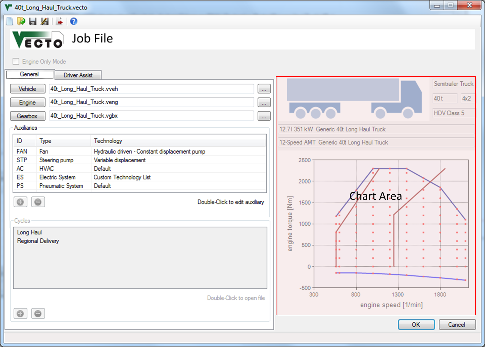

Job Editor
Description
The job file (.vecto) includes all informations to run a VECTO calculation. It defines the vehicle and the driving cycle(s) to be used for calculation. In summary it defines:
Relatve File Paths
It is recommended to define relative filepaths. This way the Job File and all input files can be moved without having to update the paths.
Example: "Vehicles\Vehicle1.vveh" points to the "Vehicles" subdirectory of the Job File's directoy.
VECTO automatically uses relative paths if the input file (e.g. Vehicle File) is in the same directory as the Job File. (The Job File must be saved before browsing for input files.)
General Settings
 Engine Only Mode
Engine Only Mode
Filepath to the Engine File (.veng)
Filepath ot the Gearbox File (.vgbx)
Auxiliaries
Cycles
Driver Assist Tab
In this tab the driver assistance functions are enabled and parameterised.
Engine Start/Stop
Overspeed / Eco-Roll
Look-Ahead Coasting
Acceleration Limiting
Chart Area
If a valid Vehicle File, Engine File and Gearbox File is loaded into the Editor the main vehicle parameters like HDV class and axle configuration are shown here.
The plot shows the full load curve(s) and shift polygons. In Declaration Mode the generic shift polygons are shown, not the ones from the Gearbox File.
Controls
 New
Job File
New
Job File
 Open existing Job File
Open existing Job File
 Save
current Job File
Save
current Job File
 Save
Job File as...
Save
Job File as...
 Send
current file to Job List in Main
Form
Send
current file to Job List in Main
Form
 Open Vehicle
Editor
Open Vehicle
Editor
 Open Engine Editor
Open Engine Editor
 Open Gearbox Editor
Open Gearbox Editor
 Browse for
vehicle/engine/gearbox files
Browse for
vehicle/engine/gearbox files
 Save and close file
Save and close file
 Cancel without saving
Cancel without saving
The job file (.vecto) includes all informations to run a VECTO calculation. It defines the vehicle and the driving cycle(s) to be used for calculation. In summary it defines:
- Filepath to the Vehicle File (.vveh) which defines the not-engine/gearbox-related vehicle parameters
- Filepath to the Engine File (.veng) which includes full load curve(s) and the fuel consumption map
- Filepath ot the Gearbox File (.vgbx) which defines gear ratios and transmission losses
- Auxiliaries
- Driver Assist parameters
- Driving Cycles (not used in Batch Mode)
Relatve File Paths
It is recommended to define relative filepaths. This way the Job File and all input files can be moved without having to update the paths.
Example: "Vehicles\Vehicle1.vveh" points to the "Vehicles" subdirectory of the Job File's directoy.
VECTO automatically uses relative paths if the input file (e.g. Vehicle File) is in the same directory as the Job File. (The Job File must be saved before browsing for input files.)
General Settings
Engine Only ModeEnables Engine Only Mode. Only the following parameters are needed for this mode:
Filepath to the Vehicle File (.vveh)- Filepath to the Engine File (.veng)
- Driving Cycles including engine torque (or power) and engine speed
Files can be created and edited using the Vehicle Editor.
Filepath to the Engine File (.veng)
Files can be created and edited using the Engine Editor.
Filepath ot the Gearbox File (.vgbx)
Files can be created and edited using the Gearbox Editor.
Auxiliaries
This list contains all
auxiliaries used for calculation. The auxiliaries are configured using the Auxiliary
Dialog. For each auxiliary an Auxiliary Input File (.vaux) must be provided and the driving cycle must include the corresponding supply power.
Double-click entries to edit with the Auxiliary Dialog.
 Add new Auxiliary
Add new Auxiliary
 Remove the
selected Auxiliary from the list
Remove the
selected Auxiliary from the list
See Auxiliaries for details.
Double-click entries to edit with the Auxiliary Dialog.
See Auxiliaries for details.
Cycles
List of cycles used for
calculation.
The .vdri format is described here.
Double-click an entry to open the file (see File Open Command).
Click selected items to edit file paths.
Add cycle (.vdri)
Remove the
selected cycle from the list
Double-click an entry to open the file (see File Open Command).
Click selected items to edit file paths.
Driver Assist Tab
In this tab the driver assistance functions are enabled and parameterised.
Engine Start/Stop
See Engine Start/Stop for details.
Overspeed / Eco-Roll
See Overspeed / Eco-Roll for details.
Look-Ahead Coasting
See Look-Ahead Coasting for details.
Acceleration Limiting
See Acceleration Limiting for details.
Chart Area
If a valid Vehicle File, Engine File and Gearbox File is loaded into the Editor the main vehicle parameters like HDV class and axle configuration are shown here.
The plot shows the full load curve(s) and shift polygons. In Declaration Mode the generic shift polygons are shown, not the ones from the Gearbox File.
Controls
Create a new empty .vecto
file
Open an existing .vecto
file
Note: The file will
be sent to the Job List automatically when saved.
Open Vehicle
Editor
Open Engine Editor
Open Gearbox Editor Browse for
vehicle/engine/gearbox files
Save and close file
File will be added to Job
List in the Main Form
Cancel without saving